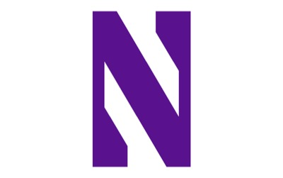
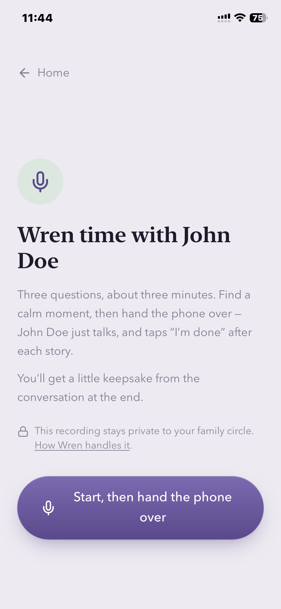
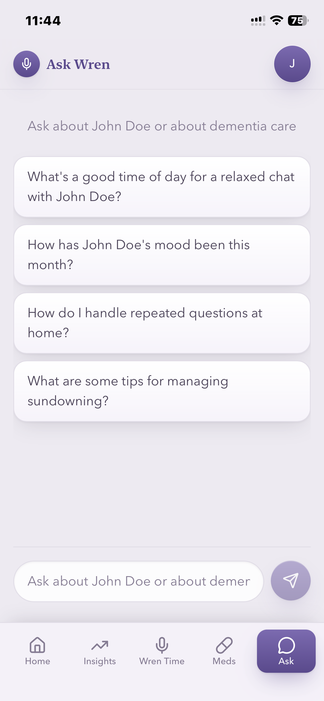
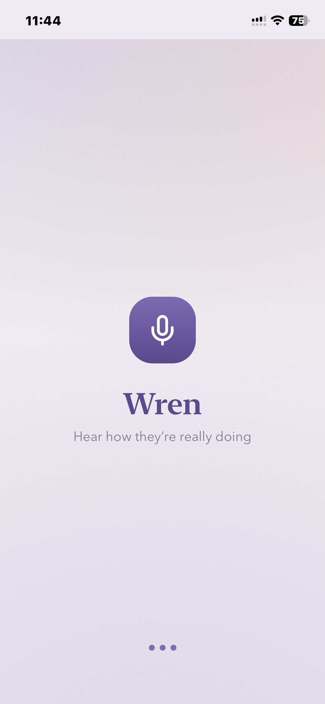

Master of Science in Artificial Intelligence
Northwestern University · Evanston, IL
Sep 2025 – Dec 2026
Hi, I'm
AI engineer who ships products, not just models.
I'm finishing an M.S. in AI at Northwestern and build retrieval and agentic systems that hold up against real data. On the side I'm building Wren, Cellar, and SafeWatch.
About me
I'm a Master's student in Artificial Intelligence at Northwestern, after a B.Tech in Computer Science from IIT Palakkad. I started out as a full-stack engineer and moved into ML because I wanted to build the parts of products that actually think.
The problems I enjoy most sit where machine learning meets real users: retrieval that finds the evidence that matters, agents whose decisions can be checked, and evaluation that shows whether a change actually helped. I like making systems measurably better and cheaper, then shipping them to people who rely on them.
Outside of work I'm usually building one of my own products, or on a basketball court.
Education

Northwestern University · Evanston, IL
Sep 2025 – Dec 2026
Indian Institute of Technology Palakkad · India
Captain & assistant coach of the basketball club: founded the institute's first women's team (quarterfinals in its first tournament) and grew the club from 8 to 65+ members.
Oct 2020 – Jul 2024
Experience
Relativity
Jun 2026 – Aug 2026
Built an agentic system that surfaces supporting evidence for legal claims across a 47K-document OCR'd corpus. It combines hybrid RAG and agentic retrieval with an LLM judge that ranks candidate evidence, and reviewer feedback flows back in through GEPA-optimised ranking prompts.
hGrid (Mahathi Software)
Dec 2024 – Aug 2025
Featured work
Real apps aimed at real users. Each one started as a company idea.
Hear how they're really doing.
A care companion for families of a parent with memory loss. Short daily voice conversations and check-ins become a calm, readable picture of mood, medications, and gentle shifts in speech. Every change is measured against the person's own baseline, never against a diagnosis, and the picture is shared across the family and easy for the doctor to read.



Rank every wine by comparing it to the last one.
The 100-point scale is a critic's tool handed to consumers, and nobody knows what a 91 means. Cellar only asks "did you like this more than that?": pick a bucket, answer a few head-to-heads, and the bottle drops into place in your personal ranking. The score is a readout of where it landed, never a number you type.


Faster response to safety events in nursing homes
When a nursing home is short-staffed, a resident's fall can go unnoticed for too long. SafeWatch sends high-risk events such as falls and sensor alerts into one triage queue, starts an SLA timer, and escalates from CNA to charge nurse to administrator until someone acknowledges the alert.
More projects
Smaller builds where I go deep on one idea.
LLM systems
A compliance copilot that grades contract checklists with citations. A deterministic decision policy sits on top of the LLM, every run produces an auditable report, and a regression eval harness tracks quality.
Source →LLM systems
A staleness-aware RAG service. Retrieval scores decay with document age, answers warn when their context is stale, and only changed chunks get re-embedded. Monitored with Grafana and Loki.
Source →LLM systems
A modular RAG platform where each domain plugs in its own dataset and config. Has a React UI and separate dev and prod Docker deployments behind NGINX.
Source →LLM systems
GPT-2 fine-tuned on Nietzsche's works from Project Gutenberg, with perplexity-based evaluation. Generation is grounded in passages retrieved with FAISS, and every response cites its source.
Agents & ML
An end-to-end Fantasy Premier League agent: it forecasts expected points, optimises the squad as a MILP, explains its picks, and applies them on the live site with Playwright.
Source →Agents & ML
INT8 post-training quantization of MobileNet with TensorFlow Lite. The model is 7.3× smaller (19.9 → 2.7 MB) and top-1 accuracy moved from 37.5% to 36.0%.
Source →Agents & ML
Popularity, BPR, and content-based recommenders on MovieLens, with MMR re-ranking. Compared on NDCG, recall, coverage, and stability.
Source →Quant
A cross-sectional momentum research framework: quantile long/short portfolios with transaction costs, drawdowns, tail risk, and regime analysis.
AI governance
An HTTP/HTTPS proxy in Go with TLS MITM and HTTP/2. It logs traffic to AI domains, redacts sensitive data based on a policy, and hot-reloads that policy without restarting.
AI governance
A Chrome extension that detects pastes, uploads, and prompts sent to ChatGPT, Claude, and Gemini. It sends metadata-only events (no raw text) to an admin dashboard.
Infrastructure
An NGINX and ngrok edge that routes Cursor's LLM calls through any OpenAI-compatible gateway. It handles bearer auth, CORS preflights, and unbuffered streaming.